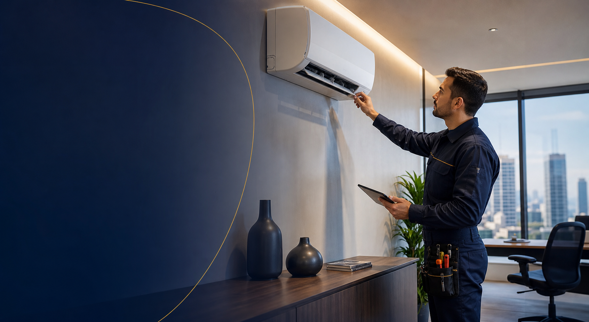
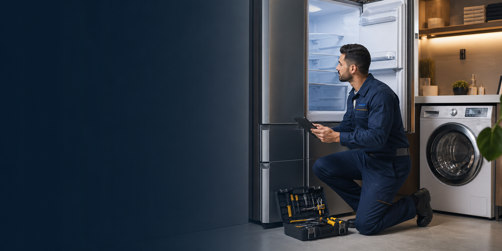

+40 anos de tradição
Climatização
Ar-condicionado, instalação, manutenção, higienização e PMOC.
Acessar ClimatizaçãoGrupo Luzitana
Duas áreas de atuação. A mesma tradição em confiança.
Escolha abaixo o atendimento ideal para sua necessidade: climatização ou assistência em refrigeração e linha branca.

Ar-condicionado, instalação, manutenção, higienização e PMOC.
Acessar Climatização
Geladeiras, máquinas de lavar, peças, controles e assistência técnica.
Acessar Assistência
A Luzitana reúne décadas de experiência atendendo residências, empresas e indústrias com soluções em refrigeração, climatização e assistência técnica.